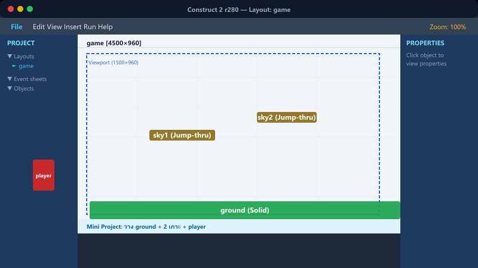
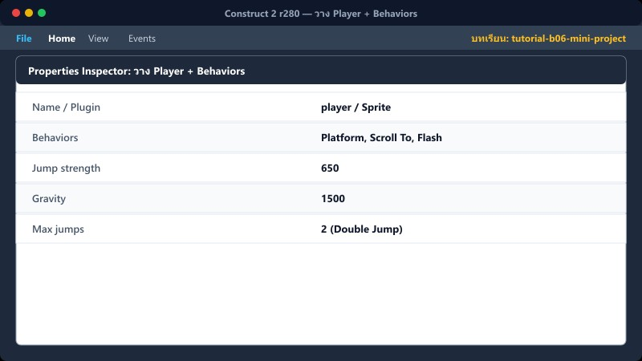
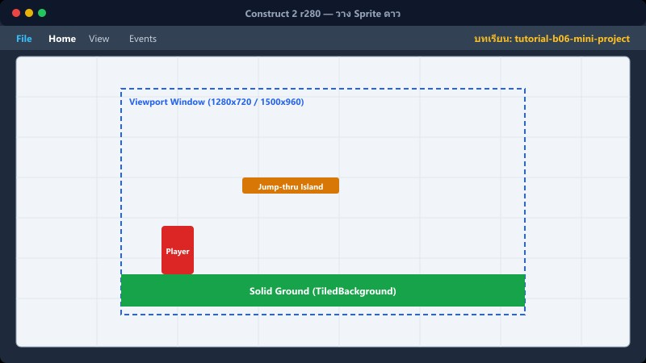
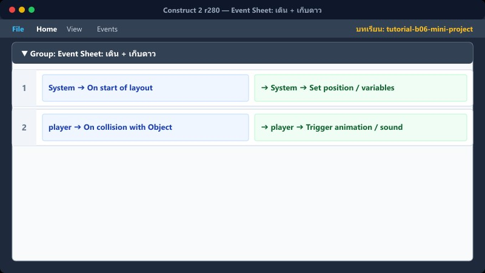
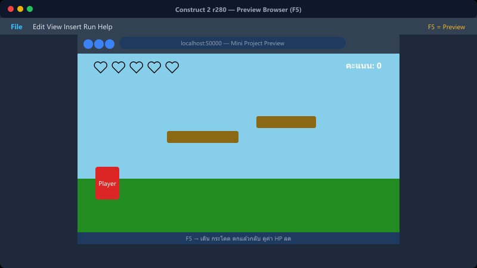
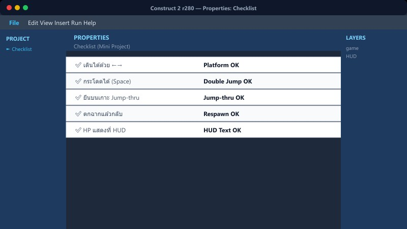

1สร้าง Layout และ Layers

1. ไปที่ File → New → Empty project
2. ตั้งค่า Window Size เป็น 1280, 720 ใน Properties
3. ไปที่แท็บ Layers สร้าง 3 Layers เรียงลำดับจากล่างขึ้นบน: bg, game, HUD
4. เลือกเลเยอร์ game ดับเบิลคลิกพื้นที่ว่าง เลือก Insert TiledBackground เพื่อใช้เป็นพื้น
5. คลิกที่ TiledBackground ไปที่ Behaviors และ Add Solid
📍 ที่ไหนใน C2: File → New → Empty project
2วาง Player + Behaviors

1. เลือกเลเยอร์ game
2. ดับเบิลคลิก พื้นที่ว่าง → Insert Sprite (ตั้งชื่อ player)
3. ไปที่ Behaviors → Add Platform และ Add Scroll To
4. ปรับค่าใน Properties ของ Platform (Jump strength: 650, Gravity: 1500, Max jumps: 2)
5. เปิด Edit image (ดับเบิลคลิกตัวละคร) แล้วสร้าง Animation: walk, Stand
| Platform Behavior |
|---|
| Max jumps | 2 |
| Jump strength | 650 |
| Gravity | 1500 |
📍 ที่ไหนใน C2: Layer game → Insert → Sprite
3วาง Sprite ดาว

1. เลือกเลเยอร์ game
2. ดับเบิลคลิก พื้นที่ว่าง → Insert Sprite (ตั้งชื่อ star)
3. โหลดภาพดาว หรือเหรียญ เข้ามา
4. นำไปวางบนเกาะหรือพื้นที่ต่างๆ 1-3 ดวง
📍 ที่ไหนใน C2: Layer game → Insert → Sprite ใหม่
4Event Sheet: เดิน + เก็บดาว

1. ใน Event sheet คลิกขวา → Add global variable ชื่อ Score
2. คลิกขวา → Add group ตั้งชื่อ เดิน+กระโดด และ เก็บของ
3. เพิ่ม Event ตามลำดับดังนี้:
Group: เดิน+กระโดด

Keyboard ➔ On
Left arrow pressed

player ➔ Set mirrored
player ➔ Set animation to
"walk"
Keyboard ➔ On
Right arrow pressed
player ➔ Set
not mirrored
player ➔ Set animation to
"walk"
Group: เก็บของ
player ➔ On collision with
star
star ➔ Destroy

System ➔ Add
10 to
Score
Text ➔ Set text to
"คะแนน : " & Score
📍 ที่ไหนใน C2: Event sheet → Add event
5เช็กลิสต์จบหลักสูตร Beginner

✅ เปิด C2 และใช้งาน Layout/Layer ได้
✅ สร้าง Sprite + Animation เป็น
✅ รู้จัก Condition และ Action
✅ ใส่ Behavior พื้นฐานได้ (Solid, Platform, Scroll To)
✅ สร้างตัวแปรและใช้งานได้
✅ สามารถทำฉากเดียวให้เล่นได้!
ถ้าทำครบหมด → พร้อมเข้า Core Track แล้ว!
6⚠️ ก่อนเข้า Core Track

เก็บโปรเจกต์ Mini นี้ไว้เป็นตัวอย่างให้ตัวเองดู. ใน Core Track เราจะใช้ไฟล์ master_v32.capx ที่เป็นเกม Red Hood Adventure จริง.
ห้ามแก้ไฟล์ master_v32.capx ล่วงหน้า จนกว่า Mini Project นี้จะสามารถรันและเล่นได้สมบูรณ์!